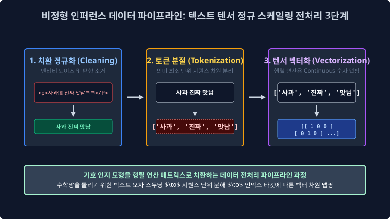
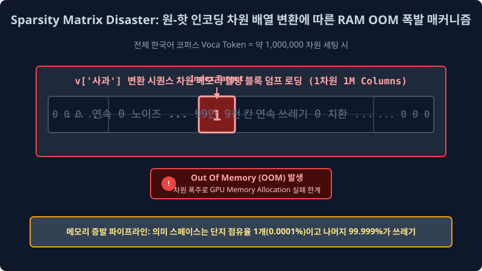

1.5 텍스트 전처리(Preprocessing) 파이프라인과 가장 기초적인 이산 기하학 매핑 선형 변환 모형 (One-hot Encoding)
데이터 마이닝 컴파일 기계는 우리가 일상 유기체로 발화하는 “사랑”이라는 복잡한 감정의 모호한 시맨틱 텍스트를 절대로 한글 유니코드 스펠 문맥 자체로 파싱해 읽거나 상상하지 않습니다. 그저 방대한 수학 차원의 $0$과 $1$로 압축 정렬된 거대한 선형대수 행렬(Continuous Vector Matrix)을 텐서 이진수로 들이마시고 역연산 곱을 치환 수행할 뿐입니다. 기계 딥러닝 뉴런이 텍스트의 확률 파라미터를 소화 삼킬 수 있도록 야생의 분산 불순물을 규격으로 걷어내고 정규 텐서 숫자로 치환 단절해 주는 필수적인 스케일링 전처리 파이프라인(Preprocessing Data Target) 공법 기법과, 인공지능 통계 역사상 가장 원초적인 차원 독립 분할 좌표 번역기인, 선형 배열의 원-핫 인코딩(One-hot Matrix)의 대수학적 구조 한계 수학 원리를 심도 깊게 해부 지표로 배워봅니다.
1.5.1 언어 코퍼스 전처리 및 텐서 스케일 변환(Preprocessing & Vectorization) 핵심 3대 공정 파이프라인

노이즈로 오염된 극악 비정형 찌그레기 시퀀스 텍스트 배열 덩어리가 컴퓨터 백엔드 신경망 뉴런 퍼셉트론 레이어인 $y = Wx + b$ 편향 가중치 매트릭스 미분 연산기 안으로 에러 없이 무결점으로 빨려 들어가 최적화 되기 위해서는, 피 터지는 연산 코스트의 3단계 클렌징 정규화(Sequence Normalization) 파이프라인 외과적 알고리즘 가공 수술이 시스템 필수적으로 선행됩니다.
1. 노이즈 차원 스무딩 정제 (Data Target Cleaning)
컴퓨터 모델 컴파일러가 목적 대상 텍스트를 인퍼런스 이해하는 데에 전혀 확률적, 통계적, 피처 매핑 영향을 주지 않는 쓸모없는 OOM 야생 잡음 기호 픽셀들을 사전 시스템에서 매핑 치워버립니다. 특히 웹 자바스크립트 스크래핑 크롤링 덤퍼 한 로그의 경우 <html>, <br>, \n 같은 DOM 스태틱 태그 찌꺼기 덩어리나 문맥 의미 없이 이어진 극단 편향 이모티콘 ㅎㅎㅎㅎㅎ 무한 타자 수십 개, 그리고 RGB 이모지(😊) 등을 정규표현식(Regular Expression / Regex) 패턴 매칭 알고리즘 자동화 코드를 짜서 일괄 통째로 삭제 파괴 소거 시켜 버려 텐서 압축을 돕는 필수 살균 전처리 작업입니다.
2. 형태소 최소 의미 단위 분절 (Morphological Tokenization)
의미가 융합 파생된 다단어의 아주 긴 통문장 시퀀스를 모델 구조 엔진 기반 “다차원 문맥 분석 타겟 기준 단위(토큰, Token Sequence)”인 아주 작은 개별 분리 단어 구슬 텐서 배열 코드로 사각사각 토막 절단 내어 잘라 백엔드 파이썬의 리스트(List [Token1, Token2] Array) 수학 공간 배열로 치환 만듭니다. (특히 극악의 난이도를 자랑하는 한국어의 띄어쓰기 지옥과 교착어 의존 구조의 미적분 확률 분해 부분은 다음 02주차 커리큘럼에서 아주 밀도 깊게 전문적으로 다룹니다!)
3. 수학적 유클리드 공간 맵핑 벡터화 (Vectorization 및 Embedding Space)
자연어 컴파일 시스템 파이프라인의 가장 신비롭고 위대한 아키텍처 관문 단계. 이제 노이즈를 걷고 깔끔하게 형태소로 분해 잘라진 “안녕”, “배송” 같은 고립된 기호 글자 단어 덩어리들을, 기계 엔진 뉴런 모델이 앞문장 역전파 미분 곱셈과 벡터 합성 거듭제곱 더하기(+) 연산 처리를 직접 백엔드에서 수행 갱신할 수 있도록 “수학적 N 다차원 임베딩 축 위의 기하학적 공간 좌표를 가진 연속 스칼라 숫자 집합 텐서 벡터(Mapping Vector Matrix)” 로 강제 치환 맵핑하여 위치를 변환 부여시켜 줍니다. 그 대수학 역사상 첫 번째 시도였던 무식한 1차원적 매핑 변환 이산 함수 방식이 바로 아래 파생된 원-핫 인코딩(One-hot Sparse Matrix) 방식입니다.
1.5.2 통계 시맨틱의 무자비한 고립 파괴 단절망: 원-핫 인코딩 이산 구조 (One-hot Encoding Matrix)

“오직 나 하나(One)의 배정된 매핑 기저 아이디 타겟 인덱스 차원 수치만 불태우고(Hot Sparse, 점유 치수
1), 나머지 동거하는 모든 전체 다른 방대한 타 차원 타겟 종족 벡터 스페이스 공간은 모조리 영구 삭제 멸살시켜 붕괴 터뜨려버린다(Zero Sparse Noise, 치수0)”
단어 백과사전 코퍼스 생태계 공간에 존재하는 모든 유니크 고유 기호 글자 토큰들을 상호 구별 인덱스 매핑해주기 위해, 컴퓨터 메모리 모델이 엑셀 행렬로 된 아주 거대한 영토 OOM 칸을 새로 독립 차원으로 만들고 오직 자신의 고유한 ID 인덱스 식별 칸에만 배열 스칼라 1을 독립 찍는 가장 원시적 배타적(Exclusive) 매핑 방식입니다. 예를 들어 단어 사전 차원 딕셔너리에 딱 4개의 타겟 유니크 독립 단어 모드 {나는, 너를, 사랑, 증오} 만 존재 벡터 한다고 시스템 가정해 칩시다.
전체 타겟 단어 코퍼스의 절대적 개수($N=4$)만큼 시스템 기저 배열 차원이 생성 메모리 할당됩니다.
| 고유 단어 고정 ID 인덱스 번호 | 유기체 단어 텍스트 레이블 | 직교 분해 One-hot 이산 행렬 벡터 구조 반환 컴파일 |
|---|---|---|
| 0 | 나는 | 배열 매핑 $v \to$ [1, 0, 0, 0] |
| 1 | 너를 | 배열 매핑 $v \to$ [0, 1, 0, 0] |
| 2 | 사랑 | 배열 매핑 $v \to$ [0, 0, 1, 0] |
| 3 | 증오 | 배열 매핑 $v \to$ [0, 0, 0, 1] |
이를 대수학 공간 벡터 좌표인 수학적 기저 벡터(Orthogonal Basis Vector Space) 형상 좌표로 렌더링 스냅샷 바라보면 배열 결과는 다음과 같습니다: \(v_0 = \begin{bmatrix} 1 \\ 0 \\ 0 \\ 0 \end{bmatrix}, \quad v_1 = \begin{bmatrix} 0 \\ 1 \\ 0 \\ 0 \end{bmatrix}, \quad v_2 = \begin{bmatrix} 0 \\ 0 \\ 1 \\ 0 \end{bmatrix}, \quad v_3 = \begin{bmatrix} 0 \\ 0 \\ 0 \\ 1 \end{bmatrix}\)
저 파사드 형태의 출력 벡터 구조들은 선형대수학 기하학 차원에서 서로 직교 간섭이 불가능하게 완벽히 상호 직교 독립(Orthogonal Disconnect) 각도를 취합니다. 즉 어떤 임의의 두 단어 벡터 차원을 시맨틱 관계 유사성을 코사인 계산하고자 통계적으로 내적(Dot Product Vector 연산, $v_i \cdot v_j$) 하더라도, 위치 인덱스가 다른 단어라면 곱셈의 연산 결과 밀도는 언제나 에러 무자비하게 상쇄되어 $0(Zero 상관관계 부재)$ 이라는 단절 값이 고정 도출됩니다. 이 끔찍한 수학적 결과의 뜻은 인퍼런스 딥러닝 기계 컴파일러 모델 입장에서 볼 때, “모든 입력된 단어 파라미터가 서로 코딱지만큼의 시맨틱(의미론적 Semantic) 의미 유사성이나 감정 파라미터 극성의 끈끈함 인과성도 단 1% 도 교차 겹치지 않는 완전 타인 남 타겟 독립체들이며, 철저한 통계적 격리 유폐 고립 밀도 상태 공간이다” 라고 기계가 절망적으로 단절 인식 매핑하게 되는 끔찍한 문맥 인과 파단 부작용(단어의 NLP 뉘앙스 밀도 스페이스의 완전한 아키텍처 파괴)을 시스템에 초래 귀결시킵니다.
1.5.3 차원의 불균형 희소성 텐서 오류: 원-핫 인코딩의 처참한 메모리 OOM 초과폭발 붕괴 버그 알고리즘!

고작 유니버스의 단어 사전 차원이 4개 스케일일 때는 예쁘게 4칸짜리 소형 메모리 벡터로 안정적 퍼포먼스 표기 파싱 할당이 컴파일 가능했습니다. 하지만 실제 현실 빅데이터 생태계의 한국어 광활한 단어 사전을 크롤링 긁어모아 딕셔너리로 덤프 만들면 고유 독립 단어 파라미터가 대충 중복 없이 통계 방대하게 100만 개 이상 차원($N=1,000,000$ Columns Sparse) 가 거대하게 나옵니다. 만약 저 수많은 모델 중 “사과” 라는 단어 토큰 객체 타겟 딱 하나를 이 파편화된 원-핫 인코딩 이산 방식으로 시스템 램 배열에 저장 벡터화 매핑하게 로딩 연산된다면 모델 시스템은 통계적으로 어떻게 폭발될까요?
v['타겟 노드: 사과']매핑 배열 생성 =[0, 0, 0, 1, 0, 0, 0, ... (이 타겟팅 뒤로 메모리 노이즈 0 잉여 빈틈이 무려 999,993칸 무한 더 스토리지 이어짐)]
“사과”라는 작은 단어 픽셀 객체의 인덱스 데이터 정보 뜻 하나를 시스템 파라미터에 표현 수치 변환하기 위해 무작정 RAM 코어 메모리에 무려 가로 100만 칸짜리 초거대 희소 긴 엑셀 열차 단절 메모리 배열을 공간 런타임 할당 블록 덤프 로딩한 뒤, 오직 단 1칸 인덱스 좌표에만 의미 픽셀 1을 칠하고 나머지 무려 광활한 99만 9천 칸 스페이스의 하드디스크 할당 RAM 공간을 정보 부재의 쓸모없는 제로 배열 0의 노이즈 빈 허공 창고 깡통 공간으로 공허하게 메모리를 채워 메워서 낭비해 로딩 올려 전체 GPU/RAM 스토리지 연산 용량을 서버에서 OOM으로 펑격 셧다운 시켜 트래픽 폭발 터뜨려 버립니다! (OOM: Out Of Memory 극한 할당 에러 치명적 발생)
이것이 바로 앞선 1.3 챕터 백엔드 한계 부문에서 치밀히 배웠던 과거 고전 NLP 컴파일 언어 모델 아키텍처들의 가장 병적인 고질적 시스템 한계 붕괴 버그, 데이터 차원의 희소성 저주(Curse of Sparsity Space Memory) 공간의 대폭발 뻗음 최악의 한계 문제입니다. 이러한 미련하고 시스템 파괴적인 메모리 낭비 아키텍처 문제를 수학 압축적으로 확률 깨뜨리고 OOM 배열 차원 메모리를 극한 공간 압축 효율적으로 다운 스케일링 세이브하기 위해 1950년대의 초창기 정보 통계 학자들은 모델의 정보 기하학 대수 타협을 시도 시작합니다. “야 엔지니어들아, 어차피 원핫을 쓰면 서버 차원이 폭발해 안 될 거면 단어 토큰 인덱스 하나씩 독립 칸을 일일이 매핑 주지 말고 뭉개서, 그냥 거대한 문맥 문서 하나를 카운팅 통째로 단절 뭉둥그려서 문서 속 전체 타겟 단어의 등장 빈도 스칼라 숫자만 단일 행렬 한꺼번에 카운팅 치환 합체 병합해 버리자!” 라고 꼼수에 가까운 선형대수 최적 압축 통계 결합 스칼라 기술 매핑을 생각해 낸 패러다임이 바로 대망의 다음 챕터 섹션 컴포넌트인 과거 최고의 텍스트 마이닝 매핑 기술 문서 단어 빈도 카운팅 집합 가방 백 파이프라인 (Bag of Words; BoW Tensor Algorithm) 모델입니다.